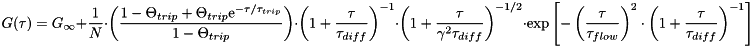

$$qf_commondoc_header.start$$ $$qf_commondoc_header.end$$
This file implement a one-component 3D diffusion model which also includes a flow and a triplett term. The model may be denoted as:

The background correction is performed by factor
$$bmath:X_{back}=\frac{(I-B)^2}{I^2}.$$
The parameters are:
 : offset of the correlation function
: offset of the correlation function : overall particle number (including currently dark particles, e.g. in triplet state)
: overall particle number (including currently dark particles, e.g. in triplet state)- Θtrip, Θnon: fraction of the particles in the triplet/non-fluorescent state
- τtrip, τnon: decay time of the triplet/non-fluorescent state
 : diffusion decay time
: diffusion decay time- τf: flow term decay time
 : aspect ratio of the gaussian used to approximate the focus
: aspect ratio of the gaussian used to approximate the focus : lateral half axis of the focus gaussian
: lateral half axis of the focus gaussian : longitudinal half axis of the focus gaussian
: longitudinal half axis of the focus gaussian- b: background intensity, as measured in a sample without fluorescing molecules (e.g. dark counts of the detector and scattering in the buffer contributes to this)
- cps: average background corrected intensity during the measurement, i.e. cps=Imeasured-b
This model also calculates the diffusion coefficient, if the width of the laser focus (xy plane) is known, as:
![\[ D=\frac{w_{xy}^2}{4\tau_D} \]](./pic/form_20.png)
where  is the diffusion time. Also the effective focal volume
is the diffusion time. Also the effective focal volume  is calculated:
is calculated:
![\[ V_{eff}=\pi^{3/2}\cdot\gamma\cdot w_{xy}^3 \]](./pic/form_14.png)
Given this focal volume, the plugin may also calculate the particle concentration in the sample:
![\[ C=\frac{N}{V_{eff}} \]](./pic/form_15.png)
Given the count rate cps and the background count rate b, we can calculate the counts per molecule:

In this model the flow velocity may be calculated from the characterstic flow time τf via:

The plugin also calculates some parameter errors:
![\[ \Delta \left(\frac{1}{N}\right)=\left|\frac{\Delta N}{N^2}\right| \]](./pic/form_16.png)
![\[ \Delta D=\sqrt{\left(\Delta w_{xy}\cdot\frac{w_{xy}}{2\tau_D}\right)^2+\left(\Delta \tau_D\cdot\frac{w_{xy}^2}{4\tau_D^2}\right)^2} \]](./pic/form_23.png)
![\[ \Delta V_{eff}=\sqrt{\left(\Delta\gamma\cdot\pi^{3/2}\cdot w_{xy}^3\right)^2+\left(\Delta w_{xy}\cdot 3\pi^{3/2}\cdot \gamma\cdot w_{xy}^2\right)^2} \]](./pic/form_17.png)
![\[ \Delta C=\sqrt{\left(\frac{\Delta N}{\pi^{3/2}\cdot\gamma\cdot w_{xy}^{3}}\right)^2+\left(\Delta\gamma\cdot\frac{N}{\pi^{3/2}\cdot w{xy}^3\cdot\gamma^2}\right)^2+\left(\Delta w_{xy}\cdot\frac{3\cdot N}{\pi^{3/2}\cdot\gamma\cdot w_{xy}^4}\right)^2} \]](./pic/form_18.png)


This model was taken from the paper:
- Kohler, R.H., P. Schwille, W.W. Webb, and M.R. Hanson. 2000. Active protein transport through plastid tubules: velocity quantified by fluorescence correlation spectroscopy. J Cell Sci 113(22):3921–3930